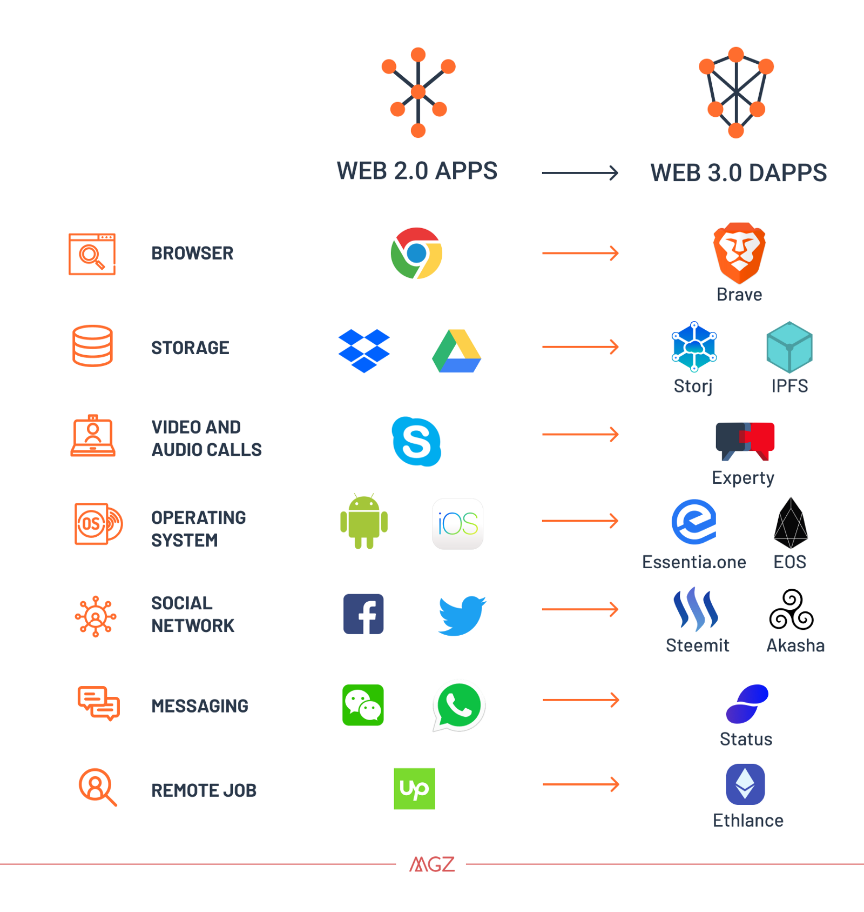

As of today, we are witnessing the start of a huge web transition, from centralized servers full of personal data, that helps the big companies, such as Facebook, Amazon and Twitter, have more control over our surfing decisions and shopping behavior, to a more open and decentralized web, where the user controls the data and has the security of encryption .
But before diving deeper into how the Web 3.0 is starting to disrupt many industries, let’s go back in time, when the web have started and improved through time .
Then the Web 2.0 came up, offering a more interactive environment that gave the user the ability to create content with websites along with his peers through social media. It represents a populist version of the web, where new tools made it possible for nearly anyone to contribute regardless of their technical knowledge. The term Web 2.0 was popularized by Tim O’Reilly after the Dotcom crash of 2000. It’s also the open source era where users can access most of the applications’ source code, and contribute to making it better.
Lately, there has been a huge hype going over the next web, called the « web3.0 », where the user will regain control of data, with no government or entity having the ability to erase websites and services, meaning no central point of control. This web would have less hacks and data breaches, as data would be decentralized, with the hackers having to shut down the entire network. The transition to the Web 3.0 will be unnoticeable because the changes will occur in the back-end, faraway from what usual users notice.
According to Tim Berners-Lee, the inventor of the World Wide Web, one of the major component of the Web 3.0 is the semantic web, a web where the user is served intelligently and intuitively, by providing him what he is exactly looking for. It is more of a linked-data network where there is a distributed databases system instead of the existing distributed files system .
The transition to the next web is already disrupting so many industries, by the introduction of the Dapps (decentralized apps ), new platforms are emerging, replacing the existing one by providing an exceptional experience.

Unfortunately there is no final definition of the Web 3.0, but is it really possible to remove these monopolistic powers that are controlling our personal data, and start living in a more open world, where the information is available to anyone ?
Only time will tell !